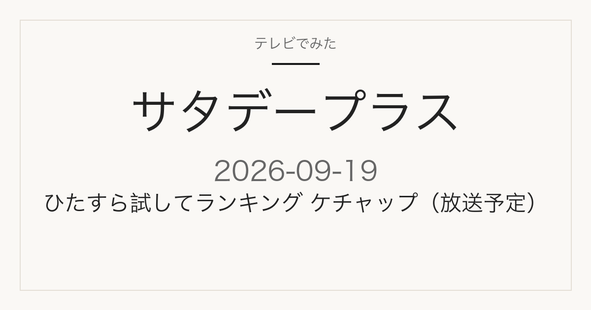

この記事には広告・アフィリエイトリンクが含まれる場合があります。
2026年9月19日（土）放送
サタデープラス
ひたすら試してランキングはケチャップ
今回のテーマはケチャップ／結果はTOP5形式で発表
これは放送前の記事です。番組公式で確認できている今回のテーマ・出演者だけを載せています。ケチャップの順位・商品名・価格は、放送でまだ発表されていません。「結局どのケチャップが1位だったのか」は、放送を見ないとまだ分かりません。このページは同じURLのまま更新します。放送後、確認できた内容から追記します。
今分かっていることを見る
放送内容
現時点で確認できていること
ランキング結果は未発表
MBS公式サイトの次回予告によると、2026年9月19日（土）あさ7時30分からのサタデープラスは、次の内容が予定されています。
- ひたすら試してランキング — テーマはケチャップ
- 旬を味わう！正門の全国レシピ交換旅 — テーマはさつまいも
- メガヒット中の〇〇館を知っておこう！ここだけインプット — よこはま動物園ズーラシア
ゲストは尾上松也さん、鈴木杏樹さん、堀田真由さんです。
出典はMBS「サタデープラス」番組公式サイトの次回予告欄（2026年9月18日確認）です。個別の商品名・メーカー・順位は、この予告には記載されていません。放送内容は変更になる場合があります。
コーナー紹介
ひたすら試してランキングとは
MBS公式サイトは、このコーナーを「サタプラ独自の方法で毎回１つのテーマに沿った商品を長時間かけて徹底調査するコーナー」と案内しています。毎回1つのテーマを設定し、時間をかけて商品を比較したうえでTOP5を発表するという形式が、回を追って続いています。
直近の回のテーマは次のとおりです。
- 9月12日 — 冷凍麺
- 9月5日 — キッチン用品2番勝負
- 8月29日 — チーズハンバーグ
- 8月22日 — 箱型プレーンヨーグルト
- 8月15日 — レトルトポークカレー
直近の9月12日「冷凍麺」の回では、1位はリンガーハットの「リンガーハットの野菜たっぷりちゃんぽん」（番組調べ570円）でした。このように、テーマに沿った複数商品を比較してTOP5を出す、というのがこのコーナーの基本形です。今回のケチャップ回で、どの商品が何位になるかは、放送前の時点ではまだ分かりません。
コーナー説明・過去のテーマ・9月12日の結果は、MBS「サタデープラス」番組公式サイトの「ひたすら試してランキング」欄（2026年9月18日確認）に基づいています。
見たあとに
放送後は、このページでケチャップの結果を確認できます
9月19日の放送後、このページに次の情報が加わります。このページは同じURLのまま更新するので、ブックマークしておけば放送直後にここで結果を確認できます。
- ケチャップランキングの確定した順位（TOP5）
- 各商品の評価・No.1の商品についてのコメント
- 番組で示される商品名・メーカー・価格
掲載するのは、番組公式かメーカー・販売元の公式情報で確認できたものだけです。放送前の時点で商品名や順位を推測して書くことはしません。
出典
MBS「サタデープラス」番組公式（次回予告欄・ひたすら試してランキング欄）
当サイトは番組公式サイトではありません。放送内容は変更になる場合があります。